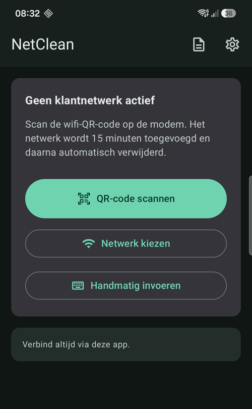
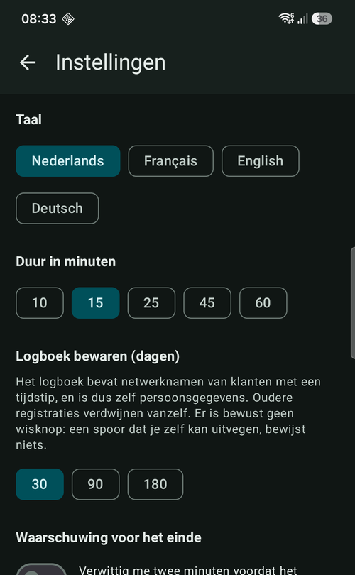

NetClean
Android · Kotlin · niet publiek
Bij een klantbezoek moet je meten op hun wifi, niet op 4G. Dus verbind je met het klantnetwerk — en dan staat dat netwerk daarna nog weken op je toestel. NetClean scant de wifi-QR van de klant, verbindt, en wist het netwerk na een timer weer volledig.
Ik heb die app gemaakt omdat het alternatief niet uit te leggen valt. Het wachtwoord van een klant is een persoonsgegeven, en verbind je gewoon via Instellingen, dan blijft dat staan. Na een paar maanden op de baan draag je de sleutel van tientallen woningen in je broekzak, verbindt je toestel er vanzelf opnieuw mee wanneer je toevallig in die straat bent, en gaat bij verlies of diefstal de hele lijst mee.
De AVG vraagt niet meer te bewaren dan nodig, en niet langer dan nodig. Voor een meting van tien minuten is "voor altijd" moeilijk te verdedigen. Dus legt de app de verbinding zelf — alleen dan mag ze die achteraf ook weer opruimen — en zet ze er een timer op. Is die om, dan is het netwerk weg zonder dat iemand eraan moet denken.
Er is ook een logboek, want "het staat er niet meer op" moet je kunnen tonen. Dat logboek bevat klantnetwerknamen met tijdstippen en is daarmee zelf een persoonsgegeven, dus verdwijnen de regels na een instelbaar aantal dagen vanzelf. Bewust zonder wisknop: een spoor dat je zelf kan uitvegen bewijst niets. Voor de zekerheid zit er daarnaast één knop die alles opruimt wat de app ooit heeft aangemaakt.
Vier talen: Nederlands, Frans, Engels, Duits. Code op aanvraag.

